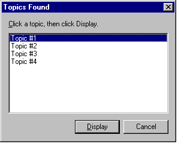
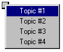

When you use the ALink, KLink, and Related Topics commands, you can specify, in the Command parameter, whether to display the list of topics in a dialog box or on a pop-up menu. Both display options will list up to 127 topics.
The following are examples of each display type:
,dialog after the command name as in the following example:
<PARAM name="Command" value="Related Topics, dialog">

,menu after the command name as in the following example:
<PARAM name="Command" value="KLink, menu">

|
|
About commands |